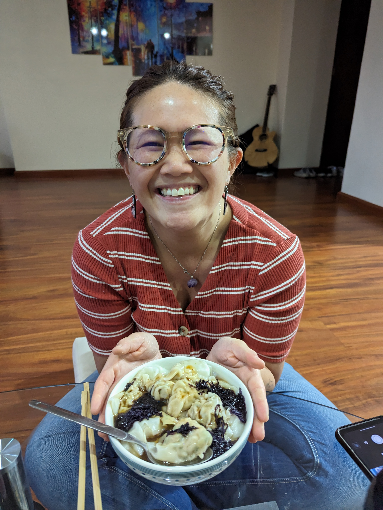

Mum's Dumplings

Description
Dumplings are a common dish that originated in China, and now has many variations throughout the world. In general, a dumpling has a filling held by some sort of wrapper. This recipe is from my own mother and can be made steamed, fried, or my favourite: in a warm, comforting soup.
Dumpling wrappers can be made as a simple mix of flour and water, but they are also typically available in the frozen section of Asian supermarkets. It's much easier and less time-consuming to use pre-made wrappers, and doesn't taste very different. Just don't forget to bring them out to defrost before preparing the mix - they usually need at least 30 minutes to defrost, and partially frozen wrappers will tend to break.
Ingredients
- 50 round dumpling wrappers (defrost if necessary)
- 700g Chinese cabbage
- 500g ground pork
- 2 eggs
- 6 teaspoons salt
- 50g chives or 1 scallion (green onion), finely chopped
- 2 shiitake mushrooms, finely minced
- 4 garlic cloves, finely minced or grated
- 3cm round of ginger, finely minced
- 4 tablespoons soy sauce
- 2 tablespoons sesame oil
- 1 bowl of water (to help with wrapping)
- Soy sauce, to taste (for serving)
- Chinese vinegar, to taste (for serving)
- 20g dried seaweed (nori or kombu)
Steps
- Chop the cabbage into 1cm strips. Mix with 5 teaspoons of salt in a large container and leave for 10 minutes. Squeeze the liquid out of the cabbage, then place the cabbage in another large container.
- Mix all the other ingredients with the cabbage.
- Take about a tablespoon of the mixture and place in the centre of a dumpling wrapper. You may want to add more or less (usually less) depending on whether the filling stays comfortably inside the wrapper.Pinch two opposing edges of the wrapper together (over the top of the filling). Starting from this middle join and working towards one side, make repeated small folds on one edge of the wrapper and pinch to join the folds to the other edge. Repeat for the other side, starting again from the middle join. If the joins are not staying together well, you can dip your index finger in the bowl of water and use the water as glue for the joins.
- For my favourite dumpling soup, bring a pot of water to the boil. Add the dumplings. Wait until they float, stirring occasionally. Add seaweed, plus soy sauce and Chinese vinegar to taste. Alternatively, the dumplings can also be cooked in a steamer or pan-fried, then served with soy sauce and Chinese vinegar.
Recipe source: my mum